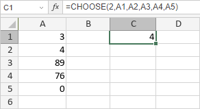

CHOOSE Funkcija
Funkcija CHOOSE je jedna od funkcija za pretragu i referencu. Koristi se za vraćanje vrednosti iz liste vrednosti na osnovu navedenog indeksa (pozicije).
Sintaksa
CHOOSE(index_num, value1, [value2], ...)
Funkcija CHOOSE ima sledeće argumente:
| Argument | Opis |
|---|---|
| index_num | Pozicija vrednosti u listi vrednosti, numerička vrednost veća ili jednaka 1, ali manja od broja vrednosti u listi. |
| value1/2/n | Lista vrednosti ili izabrani opseg ćelija koje treba analizirati. |
Napomene
Kako primeniti funkciju CHOOSE.
Primeri
Slika ispod prikazuje rezultat koji vraća funkcija CHOOSE.
